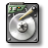
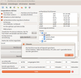
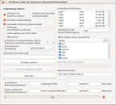
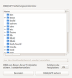
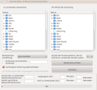
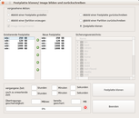
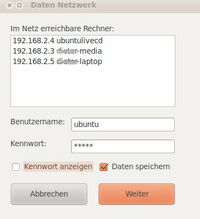
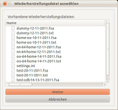
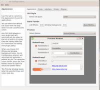

qt4-fsarchiver
Dieser Artikel wurde für die folgenden Ubuntu-Versionen getestet:
Ubuntu 17.10 Artful Aardvark
Ubuntu 16.04 Xenial Xerus
Ubuntu 14.04 Trusty Tahr
Zum Verständnis dieses Artikels sind folgende Seiten hilfreich:

qt4-fsarchiver  ist eine grafische Oberfläche für das von Francois Dupoux entwickelte Programm Fsarchiver. Dieses dient zum Sichern und Wiederherstellen von Partitionen und Verzeichnissen. Fsarchiver kann mit Partitionen im Format wie
ist eine grafische Oberfläche für das von Francois Dupoux entwickelte Programm Fsarchiver. Dieses dient zum Sichern und Wiederherstellen von Partitionen und Verzeichnissen. Fsarchiver kann mit Partitionen im Format wie ext3 und ext4, mit dem experimentellen btrfs und auch mit dem Windows-Dateisystem NTFS umgehen. FAT32 wird ab der Version 0.8.0-5 unterstützt.
Zusätzlich zu den Möglichkeiten von fsarchiver kann qt4-fsarchiver den MBR/GPT sichern, wiederherstellen, Festplatten klonen und Abbilder von Festplatten erzeugen und zurückschreiben. Einschränkend muss allerdings gesagt werden, dass nicht alle Befehle von fsarchiver zur Verfügung stehen, so dass in Ausnahmefällen dennoch auf die Kommandozeilenversion zurückgegriffen werden muss.
Installation¶
Das Programm ist kein Bestandteil der offiziellen Paketquellen. Zur Installation muss man daher auf ein "Personal Package Archiv" (PPA) [1] ausweichen oder das Programm aus dem Quellcode kompilieren.
PPA¶
Die noch auf Qt 4 basierende Version kann über folgendes PPA installiert werden.
Adresszeile zum Hinzufügen des PPAs:
ppa:dieterbaum/qt4-fsarchiver
Hinweis!
Zusätzliche Fremdquellen können das System gefährden.
Ein PPA unterstützt nicht zwangsläufig alle Ubuntu-Versionen. Weitere Informationen sind der  PPA-Beschreibung des Eigentümers/Teams dieterbaum zu entnehmen.
PPA-Beschreibung des Eigentümers/Teams dieterbaum zu entnehmen.
Damit Pakete aus dem PPA genutzt werden können, müssen die Paketquellen neu eingelesen werden.
Nach dem Aktualisieren der Paketquellen kann folgendes Paket installiert [2] werden:
qt4-fsarchiver (ppa)
 mit apturl
mit apturl
Paketliste zum Kopieren:
sudo apt-get install qt4-fsarchiver
sudo aptitude install qt4-fsarchiver
Ab Ubuntu 16.04¶
Hinweis:
Die aktuelle Version von qt4-fsarchiver für Ubuntu 16.04 verwendet Qt 5. Das übersetzte Programm wurde entsprechend in qt5-fsarchiver umbenannt. Die Funktionsweise und die Beschreibung sind identisch. Nachstehend wird nur von qt4-fsarchiver gesprochen. Abweichungen zu qt5-fsarchiver werden besonders erwähnt.
Die Launchpadadresse für die Installation von qt5-fsarchiver lautet:
Die Installation von qt5-fsarchiver erfolgt wie oben beschrieben.
Live-CD¶
Das Abbild (ISO Image) einer Live-CD mit qt4-fsarchiver, in dem auch fsarchiver enthalten ist, kann hier heruntergeladen werden: Live-CD qt5-fsarchiver  . Enthalten sind qt4-fsarchiver zum Sichern und Wiederherstellen von Partitionen, Verzeichnissen, MBR sowie weitere Datenrettungsprogramme und verschiedene Systemwerkzeuge auf einer bootfähigen CD. Verschiedene Versionen auf Basis von Ubuntu 16.04 (32- und 64-Bit) und 12.04 (32-Bit) mit deutscher und englischer Oberfläche sind verfügbar. Die 64-bit-Variante unterstützt auch den UEFI-Modus.
. Enthalten sind qt4-fsarchiver zum Sichern und Wiederherstellen von Partitionen, Verzeichnissen, MBR sowie weitere Datenrettungsprogramme und verschiedene Systemwerkzeuge auf einer bootfähigen CD. Verschiedene Versionen auf Basis von Ubuntu 16.04 (32- und 64-Bit) und 12.04 (32-Bit) mit deutscher und englischer Oberfläche sind verfügbar. Die 64-bit-Variante unterstützt auch den UEFI-Modus.
Bedienung¶
Achtung!
Das Programm benötigt zwingend Root-Rechte [3]!
Die Unterstützung des NTFS-Dateisystems ist nicht stabil und ist mit entsprechender Vorsicht einzusetzen. Dies gilt selbstverständlich auch für qt4-fsarchiver.
Unter "Zubehör -> qt4-fsarchiver" ist bei Ubuntu-Varianten mit einem Anwendungsmenü ein Programmstarter zu finden. Beim KDE-Desktop steht dieser unter "Anwendungen -> Dienstprogramme". Bei Unity kann das Programm unter "Anwendungen auswählen -> Installiert" gestartet werden. Die Übernahme in das Unity-Startmenü ist unter Unity/Unity Startmenü beschrieben.
Die folgenden Bilder zeigen die Verwendung in verschiedenen Situationen:
|  |
| Partitionen sichern/wiederherstellen |
|  |
| Partitionen über ein Netzwerk sichern/wiederherstellen |
|  |
| MBR sichern/wiederherstellen |
|  |
| Verzeichnisse sichern/wiederherstellen |
|  |
| Festplatte klonen, Abbild sichern/wiederherstellen |
Sicherung erstellen¶
Partitionssicherung¶
Unter "Aktionen -> Partition sichern" oder durch einen  -Klick auf den Menübutton wird die Sicherung gestartet. Zu Beginn der Sicherung wird geprüft, ob die Auswahl der zu sichernden Partition, das Sicherungsverzeichnis und der Name der Sicherung eingegeben wurden. Dem Sicherungsnamen wird vom Programm ein Datumsstempel hinzugefügt. Die Auswahl der Kompressionsart und Anzahl der zu verwendenden Prozessorenkerne ist möglich. Mögliche Optionen: Hinweise zur Sicherung eingeben, vorhandene Sicherung ohne Rückfrage überschreiben, Sicherung verschlüsseln (6 - 64 Zeichen zulässig), Archiv auf 2GB, 4GB oder DVD-Größe splitten und Mitsichern des Partition Boot Records (PBR).
-Klick auf den Menübutton wird die Sicherung gestartet. Zu Beginn der Sicherung wird geprüft, ob die Auswahl der zu sichernden Partition, das Sicherungsverzeichnis und der Name der Sicherung eingegeben wurden. Dem Sicherungsnamen wird vom Programm ein Datumsstempel hinzugefügt. Die Auswahl der Kompressionsart und Anzahl der zu verwendenden Prozessorenkerne ist möglich. Mögliche Optionen: Hinweise zur Sicherung eingeben, vorhandene Sicherung ohne Rückfrage überschreiben, Sicherung verschlüsseln (6 - 64 Zeichen zulässig), Archiv auf 2GB, 4GB oder DVD-Größe splitten und Mitsichern des Partition Boot Records (PBR).
Partitionssicherung über ein Netzwerk¶
Unter "Aktionen -> Partition sichern Netzwerk" oder durch einen -Klick auf den Menübutton wird die Sicherung gestartet. Die Handhabung ist analog zu dem obigen Menüpunkt. Es werden zusätzlich abgefragt: die Zugangsdaten zu einem Netzwerk, das zu verwendende Netzwerkprotokoll (Samba, SSH oder NFS) und der Ordner, in dem die Sicherungsdatei gespeichert werden soll.
MBR/GPT-Sicherung¶
Unter "Aktionen -> MBR/GPT sichern" oder durch einen -Klick auf den Menübutton kann der MBR oder die GUID Partitionstabelle gesichert werden. Es wird der MBR mit dem verborgenen Bereich gesichert. Bei mehreren vorhandenen Festplatten ist eine entsprechende Auswahl möglich. Das Verzeichnis, in das der MBR/GPT geschrieben werden soll, muss angegeben sein. Das Programm erkennt selbstständig, ob der MBR oder die GPT gesichert werden soll.
Verzeichnis-Sicherung¶
Unter "Aktionen -> Verzeichnis sichern" oder durch einen -Klick auf den Menübutton kann das zu sichernde Verzeichnis und der Speicherort der Sicherung gewählt werden. Die Auswahl der Kompressionsart und Anzahl der zu verwendenden Prozessorenkerne ist möglich. Mögliche Optionen: vorhandene Sicherung ohne Rückfrage überschreiben und Sicherung verschlüsseln(6 - 64 Zeichen zulässig).
Festplatte klonen, Abbild einer Festplatte oder einer Partition erzeugen¶
Unter "Aktionen -> Festplatte klonen, Image erzeugen/zurückschreiben" oder durch einen -Klick auf den Menübutton kann die zu klonende Festplatte, eine Festplatte oder eine Partition von der ein Abbild erzeugt werden soll, ausgewählt werden. Zusätzlich muss die Zielfestplatte oder das Verzeichnis festgelegt werden, in dem das Abbild gespeichert werden soll. Es besteht die Möglichkeit auszuwählen, ob das Abbild komprimiert werden soll oder nicht. Mit diesem Menüpunkt kann ein Image einer Partition erstellt werden, deren Formatierung von fsarchiver nicht unterstützt wird (beispielweise FAT).
Hinweis:
Die Sicherung der eingehängten Root- oder Home-Partition ist, nach einem Warnhinweis, möglich. Dabei ist zu beachten, dass qt4-fsarchiver fortlaufend sichert. So ist es kein Problem, im Internet zu surfen oder mit dem Mailprogramm zu arbeiten. Während der Sicherung ein Programm zu installieren oder das System zu aktualisieren macht keinen Sinn, da solche Änderungen überhaupt nicht oder nur teilweise gesichert werden. Das System kann dadurch beschädigt werden.
Der oben erwähnte Partition Boot Record (PBR) sind die ersten 512 Bytes einer jeden Partition. In den PBR kann auch der Bootmanager eingetragen werden. GRUB unterstützt den PBR nicht, so dass bei Nutzung von GRUB als Bootmanager der PBR nicht gesichert oder wiederhergestellt werden muss. Diese Option ist nur bei Verwendung von anderen Bootmanagern eventuell sinnvoll.
|  |
| Netzwerkdaten eingeben |
In der Maske kann ein erkannter Netzwerkrechner ausgewählt werden. Die Zugangsdaten zu dem Netzwerk müssen eingegeben und können gespeichert werden (in sensiblen Bereichen sollte das Kennwort nicht gespeichert werden). Voraussetzungen für die Arbeit im Netzwerk unter Linux:
Netzwerkprotokoll SMB - auf dem Rechner, der die Sicherung durchführt/wiederherstellt (Client) und auf dem Rechner, auf dem die Daten abgelegt werden (Server), muss Samba installiert sein. Das Einbinden des virtuellen Dateisystem "cifs-vfs" auf dem Linux-Rechner muss möglich sein. Siehe Samba Client cifs.
Netzwerkprotokoll SSH - auf dem Rechner dem Rechner, auf dem die Daten abgelegt werden (Server), muss das Programm openssh-server installiert sein. Siehe SSH.
Netzwerkprotokoll NFS - auf dem Rechner, auf dem die Daten abgelegt werden (Server), muss das Programm nfs-kernel-server installiert sein und in der Datei /etc/exports müssen die freigegebenen Verzeichnisse eingetragen sein. Siehe NFS.
Sicherung wiederherstellen¶
Partitionswiederherstellung¶
|  |
| Zurücksichern: Datei auswählen |
Unter "Aktionen -> Partition wiederherstellen" oder durch einen -Klick auf den Menübutton wird die Wiederherstellung gestartet. Zu Beginn der Sicherung muss die zurückzuschreibende Partition und die Sicherungsdatei ausgewählt worden sein. Beim Start der Wiederherstellung wird geprüft, ob die Bezeichnung der gesicherten Partition (beispielsweise /dev/sda5) mit der Bezeichnung der wiederherzustellenden Partition übereinstimmt. Nach entsprechendem Warnhinweis kann die Partition auf eine beliebige Partition zurückgeschrieben werden. Die wiederherzustellende Partition muss ausgehängt sein.
Das Programm überprüft, ob beim Sichern der PBR mitgesichert wurde. In diesem Fall wird - nach Rückfrage - der PBR wiederhergestellt. Es gibt derzeit kein Werkzeug, um beim Formatieren einer Btrfs-Partition eine UUID zu bestimmen. Deshalb wird beim Zurückschreiben einer Btrfs-Partition abgefragt, ob die Partition neu formatiert und damit die UUID geändert wird oder ob nur alle vorhandenen Dateien gelöscht werden sollen. In diesem Fall bleibt die UUID erhalten.
Partitionswiederherstellung über ein Netzwerk¶
Unter "Aktionen -> Partition wiederherstellen Netzwerk" oder durch einen -Klick auf die Menüschaltfläche wird die Wiederherstellung gestartet. Die Handhabung ist analog zu dem obigen Menüpunkt. Die Zugangsdaten zu einem Netzwerk, das verwendete Netzwerkprotokoll, das Verzeichnis in dem die wiederherzustellende Sicherungsdatei abgelegt ist und die wiederherzustellende Sicherungsdatei werden zusätzlich abgefragt.
MBR-/GPT-Wiederherstellung¶
Unter "Aktionen -> MBR/GPT wiederherstellen" oder durch einen -Klick auf den Menübutton kann der MBR/GPT wiederhergestellt werden. Dieser Menüpunkt ist mit großer Vorsicht anzuwenden, da durch falsche Angaben das System zerstört werden kann. Bei mehreren vorhandenen Festplatten ist eine entsprechende Auswahl möglich. Wiederherstellungsmöglichkeiten bei MBR: nur den Bootloaderbereich wiederherstellen, Bootloaderbereich und Partitionstabelle wiederherstellen, Partitionstabelle wiederherstellen und den verborgenen Bereich wiederherstellen.
Ist auf dem Rechner beispielsweise Ubuntu 11.04 installiert und wird eine Sicherung von 10.04 zurück gesichert, wird GRUB zerstört und der Rechner ist nicht mehr bootbar. Durch die Wiederherstellung des MBR und des verborgenen Bereiches der Partition wird GRUB wiederhergestellt. Um die Sicherheit bei der MBR-Wiederherstellung zu erhöhen, werden der Name der wiederherzustellenden Festplatte und die Größe des verborgenen Bereichs mit der Sicherung verglichen. Bei Differenzen erfolgen Warnhinweise. Bei der Wiederherstellung des Master Boor Records muss eine Sicherungsdatei ausgewählt werden, in der die Zeichenfolge "_mbr_" enthalten ist. Bei der Wiederherstellung der GUID-Partitionstabelle muss eine Sicherungsdatei ausgewählt werden, in der die Zeichenfolge "_gpt_" enthalten ist. Bei falscher Dateiauswahl erfolgt jeweils ein Warnhinweis.
Verzeichnis-Wiederherstellung¶
Unter "Aktionen -> Verzeichnis wiederherstellen" oder durch einen -Klick auf den Menübutton kann ein gesichertes Verzeichnis wiederhergestellt werden. Die Anzahl der zu verwendenden Prozessorkerne ist möglich. Mögliche Optionen: vorhandene Sicherung wird an den Ursprungsort oder an einen auszuwählenden Ort zurückgeschrieben.
Abbild einer Festplatte zurückschreiben¶
Unter "Aktionen -> Festplatte klonen, Image erzeugen/zurückschreiben" oder durch einen -Klick auf den Menübutton kann ein Abbild einer Festplatte oder einer Partition zurückgeschrieben werden. Es müssen lediglich die Image-Datei und die Festplatte/Partition ausgewählt werden, deren Image zurückgeschrieben werden soll.
Das Wiederherstellen von Partitionen kann nur dann vorgenommen werden, wenn die Partition ausgehängt ist. Die Wiederherstellung einer Root- oder Homepartition ist mit der Live-CD qt4-fsarchiver  möglich. Auf der bekannten SystemRescueCD ist das Programm fsarchiver ebenfalls vorhanden, so dass diese Live-CDs auch zum Zurückschreiben von mit qt4-fsarchiver erstellten Archiven geeignet ist. Oder man erstellt sich selbst eine Live-CD mit Remastersys, wie unten beschrieben.
möglich. Auf der bekannten SystemRescueCD ist das Programm fsarchiver ebenfalls vorhanden, so dass diese Live-CDs auch zum Zurückschreiben von mit qt4-fsarchiver erstellten Archiven geeignet ist. Oder man erstellt sich selbst eine Live-CD mit Remastersys, wie unten beschrieben.
Einstellungen¶
Unter "Einstellungen -> Basiseinstellungen" können Grundeinstellungen (u.a Spracheinstellungen: Deutsch, Englisch und Russisch) vorgenommen werden, die beim Start des Programms aktiviert sind.
Kompressionseinstellungen¶
fsarchiver bietet dem Nutzer 9 Kompressionstufen an, bei welchen es sich eigentlich um verschiedene Unterstufen (außer lzo) von 4 verschiedenen Kompressionsmethoden handelt. Im Folgenden ist ein Test im tabellarischer Form zu finden, um anschaulich vergleichen zu können, welche Methode für den jeweiligen Nutzer am gebräuchlichsten erscheint.
Für den gesamtem Test lagen folgende Bedingungen zu Grunde:
Quellmedium: ganze Partition
Partitionstyp: Kubuntu root-Partition (breit gestreute Datenformate); ohne das /home-Verzeichnis (liegt auf separater Partition)
Partitionsgröße: 15 GiB; tatsächlicher Dateninhalt 4,43 GiB; 189807 Dateien und Verzeichnisse
| Kompressionsübersicht | |||
| Modus/Stufe | Komprimierte Größe (~ GiB) | Zeitaufwand | Ersparnis in ~ % |
| lzo (keine Unterstufen) | 2.141.695.938 Byte (1.99 GiB) | 11 min 12 Sek | 55,1 |
| gzip fast | 1.822.273.889 Byte (1.7 GiB) | 12min 11 Sek | 61,6 |
| gzip standard | 1.695.248.687 Byte (1.58 GiB) | 12 min 49 Sek | 64,3 |
| gzip best | 1.688.266.397 Byte (1,57 GiB) | 23 min 52 Sek | 64,6 |
| bzip2 fast | 1.660.019.964 Byte (1,55 GiB) | 26 min 11 Sek | 65 |
| bzip2 good | 1.637.605.954 Byte (1,53 GiB) | 28 min 23 Sek | 65,5 |
| lzma fast | 1.597.604.088 Byte (1,49 GiB) | 19 min 19 Sek | 66,4 |
| lzma medium | 1.480.208.664 Byte (1,38 GiB) | 59 min 4 Sek | 68,8 |
| lzma best | 1.461.640.213 Byte (1,36 GiB) | 67 min 0 Sek | 69,3 |
Umgang mit verschlüsselten Partitionen¶
qt4-fsarchiver kann mit ecryptfs verschlüsselte Homeverzeichnisse sichern und wiederherstellen. Das ist unabhängig davon, ob das Homeverzeichnis in einer eigenen Partition oder innerhalb des Wurzelverzeichnisses gespeichert ist.
Mit TrueCrypt verschlüsselte Partitionen können nicht gesichert werden.
Live-CD/USB-Stick erstellen und Handhabung¶
Ein Abbild der Live-CD/-DVD herunterladen . Man entpackt das Archiv [2] und brennt die enthaltene ISO-Datei. Die angebotenen Live-CDs basieren auf Ubuntu Ubuntu 12.04 und Ubuntu 14.04 (jeweils 32-Bit). So erhält man für Sicherungs- und Rettungszwecke eine CD/DVD mit guter Hardwareerkennung.
Damit der mit dem USB-Creator erzeugte bootfähige Stick funktioniert, müssen in der ISO-Datei das Verzeichnis isolinux in syslinux und die Datei isolinux.cfg in syslinux.cfg umbenannt werden. Wird der USB-Stick mit unetbootin erzeugt, sind keine Änderungen erforderlich. Auf einem USB-Stick, auf dem mehrere Linuxsysteme vorhanden sind und der mit GRUB 2 startet, ist dieser Eintrag in der grub.cfg erforderlich:
menuentry "qt4-fsarchiver" {
set isofile="/boot/iso/qt4-fsarchiver-live-CD-0.6.19-3.iso"
loopback loop $isofile
linux (loop)/casper/vmlinuz quiet splash boot=casper noeject noprompt root=UUID=xxxxxx loop=$isofile --
initrd (loop)/casper/initrd.gz
}
In set isofile= ist der Name der ISO-Datei gegebenenfalls anzupassen. Bei der Benutzung benötigt man das Kennwort ubuntu.
Beim Starten von qt4-fsarchiver werden alle nicht eingebundenen Partitionen unter /media/sda..., /media/sdb... eingebunden und sind somit leicht auf der Oberfläche erreichbar. Das Verzeichnis, in dem die Sicherung gespeichert werden soll, beziehungsweise das Verzeichnis, in dem die gesicherte Partition abgelegt ist, ist somit in qt4-fsarchiver unter /media/sd.... ansprechbar. Die zu sichernde oder wiederherzustellende Partition wird beim Start der Sicherung oder Wiederherstellung selbsttätig ausgehängt. Beim erneuten Aufruf von qt4-fsarchiver wird die gerade gesicherte oder wiederhergestellte Partition wieder eingebunden.
qt4-fsarchiver kann mehrfach aufgerufen werden. So ist es zum Beispiel möglich, zeitgleich die Root-Partition und die Home-Partition zu sichern (Voraussetzung ist natürlich, dass zwei getrennte Partitionen existieren).
Problembehebung¶
Oberfläche anpassen¶
|  |
| qtconfig-qt4 |
Um das Aussehen bei auf GTK+ basierenden Desktops wie z.B. Unity zu ändern, benötigt man die Programme qtconfig-qt4 und gksudo. Dann startet man die Qt-Konfiguration mit dem Befehl [4]:
gksudo qtconfig-qt4
Unter "Appearance -> GUI Style" wählt man "GTK+" aus. Man speichert die Änderung und schließt die Qt-Konfiguration.
Links¶
Rettungsanker - Partitionen sichern und wieder herstellen
- LinuxUser, 02/2012Datensicherung
 Übersichtsartikel
Übersichtsartikel
- Erstellt mit Inyoka
-
 2004 – 2017 ubuntuusers.de • Einige Rechte vorbehalten
2004 – 2017 ubuntuusers.de • Einige Rechte vorbehalten
Lizenz • Kontakt • Datenschutz • Impressum • Serverstatus -
Serverhousing gespendet von